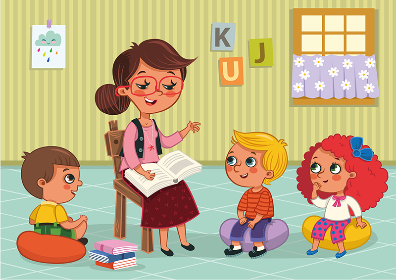

Little Stars
The Little Stars is located at the top end of Jupiter High Street, making it an ideal location for families living in Merry Hill, Notting Hill, Holland Park and South Kensington. Children can start at the age of one and stay with us until the age of six. Our spacious classrooms are bright and airy, and provide the children with ample room for all the activities our nursery offers. We have strong ties with many of the leading private schools in London and we will prepare your child for entry into the school of your choice. Our goal is to provide a safe and caring environment, where children can gain a positive approach to school and learning. They will learn to care for, and respect each other, whilst learning how to be part of a group.

Good nursery education is crucial to a child's formative years, and fosters an enthusiasm and confidence that will remain with them throughout their school life. Our experienced and dedicated staff help the children to become successful learners, confident individuals, and caring contributors to society. The children learn through play and structured lessons, with a balance of free choice. It is widely accepted that children in this age group absorb and achieve more than at any other stage in their school life, and this makes choosing the right nursery school vital.
